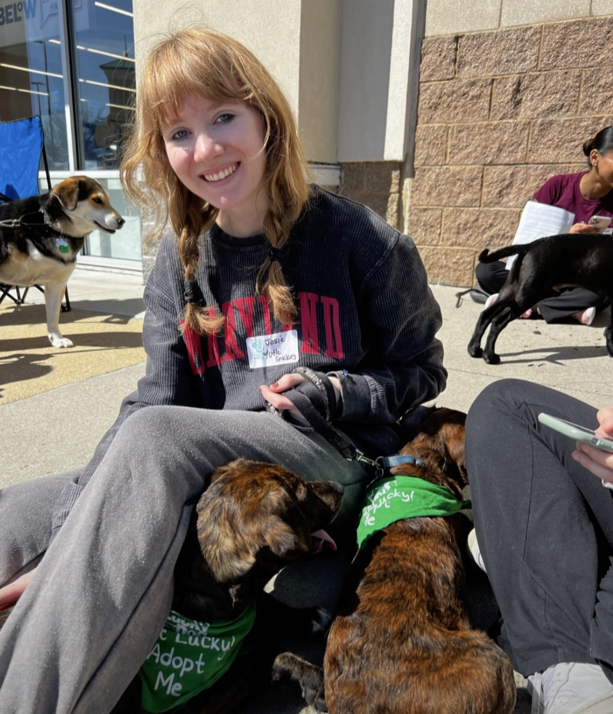

I'm a Ram! 🐏
I am currently pursuing my Master of Science in Business Analytics at Fordham University’s Gabelli School of Business.
I look forward to building on the knowledge I gained during my undergraduate studies and applying these skills in professional settings.
The courses I am most excited to take are Machine Learning for Business and Data Visualization.
I'm a Terp! 🐢
I am a University of Maryland graduate with a Bachelor of Science in Social Data Science and Psychology.
My academic and professional experiences have provided me with a strong foundation in data visualization (Tableau, Power BI, Gephi), programming (Python, R), database management (MySQL), and Excel.
I have been a teaching assistant for three courses: Research Methods in Psychology Laboratory, Introduction to Programming for Information Science, and Data Science Techniques.
As a teaching assistant, I am responsible for helping students understand course content during labs, lectures, and office hours.

Alpha Phi Omega
In college, I was a member of the University of Maryland's chapter of Alpha Phi Omega, a national community service fraternity. My favorite service events were volunteering at a local animal shelter and the Lucky Dog Animal Rescue.
I took on leadership positions by joining and leading committees including the Fellowship Committee, Service Committee, and Campus Relations Committee.
Additionally, I served as the Elections Chair, where I organized and oversaw the election process.
Today, I continue to stay involved in community service by participating in a weekly food and hygiene distribution program in New York City.
Rewriting the Code
I am a member of Rewriting the Code, a peer-to-peer network of women in tech.
Through this network, I have explored different career paths in tech and learned more about companies that align with my interests.
I also participate in networking and professional development events that have boosted my confidence as I continue to grow professionally.